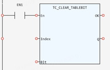

System Function.
Resets a bit of the TABLE.
|
Index: DINT; |
TABLE number |
|
Bit: USINT; |
Bit number |
|
Q: SINT; |
0: Incorrect TABLE number or Incorrect Bit number 1: function has completed |
This function resets a bit of the TABLE.
( SINT ):= TC_CLEAR_TABLEBIT (Index:= ( DINT ), Bit:= ( USINT ));

Not available.